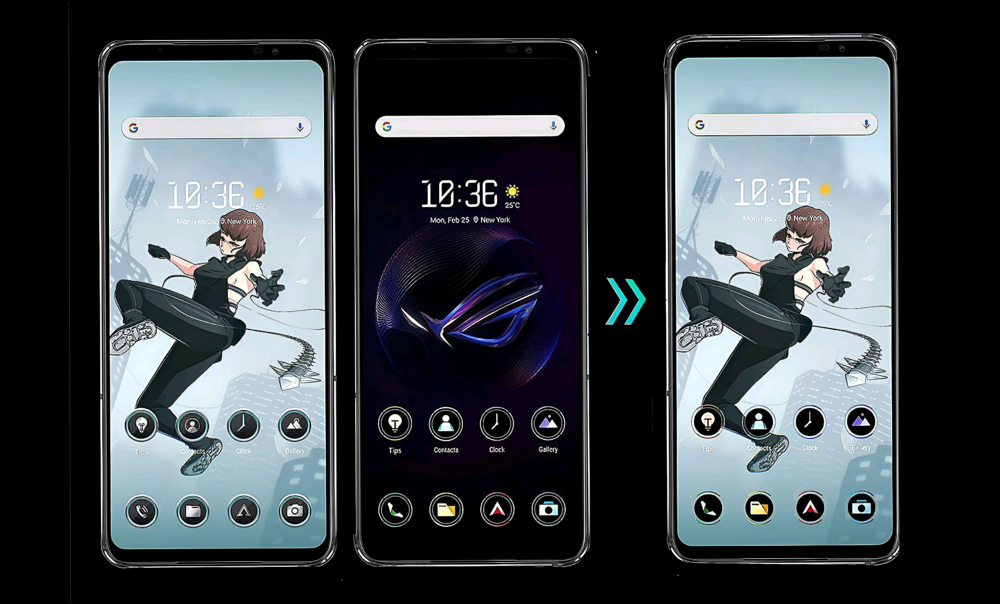
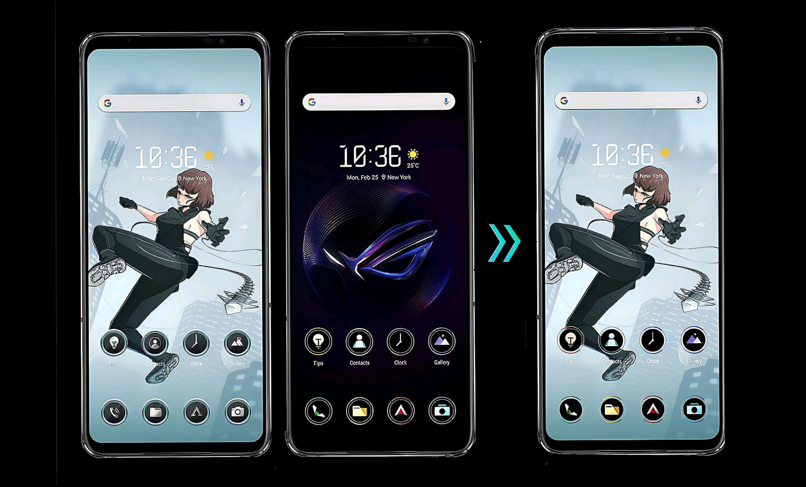

CONTROL
AIRTRIGGER - BOTONES ULTRASÓNICOS
Los renombrados controles ultrasónicos AirTrigger le brindan un control inigualable con la punta de los dedos sobre sus juegos para una experiencia similar a la de una consola. Admiten una amplia gama de gestos, incluidos Acción dual, Presionar y levantar, y Apuntar con giroscopio. ¡Toma el control total con el ROG Phone 7
2
botones ultrasónicos
9
gestos
Respuesta táctil en el eje X
El ROG Phone 7 está equipado con un motor lineal en el eje X que proporciona una potente respuesta háptica, para llevarte al corazón de la acción.
Potente
Motor lineal
del eje X
Vibración optimizada
en casos de uso diario del teléfono
CONSTRUIDO PARA JUGADORES
El ROG Phone 7 Ultimate incluye potentes funciones de software que te ofrecen una experiencia gaming sin igual.
VIBRACIÓN MAPPING
X SENSE
X CAPTURE
MODO EN
SEGUNDO PLANO
MEZCLA Y COMBINA
CON THEME PACK

 

IP54
El ROG Phone 7 es resistente a salpicaduras IP548 para que te quedes tranquilo